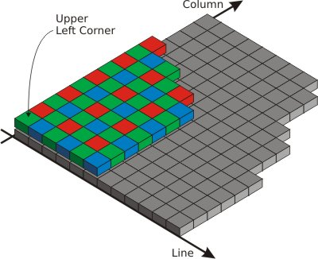
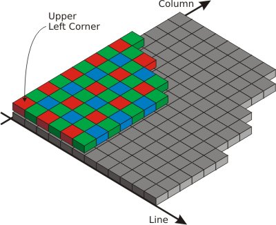
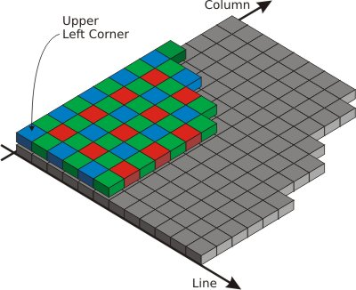
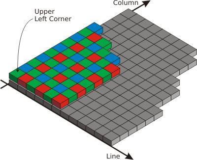

Bayer Filter
Parameter Set
Description
From Wikipedia, the free encyclopedia (online link / offline link [Mozilla Firefox recommended]):
"A Bayer filter is a color filtering array for arranging RGB colors on a monochromatic grid. The term most often refers to a common mosaic of color filters used on many single chip digital cameras. Each sensor pixel is covered by red, green and blue coloured filters. The Bayer filter has twice as many green pixels as red or blue because of the human eye's greater resolving power with green light.
The raw output of Bayer filter cameras is referred to as a Bayer Pattern image. Since each pixel is filtered to record only one of the three colors, two thirds of the color data is missing from each. A demosaicing algorithm is used to interpolate the complete red, green, and blue values for each point. [...]"
Two different demosaicing algorithms are available, depending on selected the applet. Some Applets utilize a non-linear interpolation of high quality, whereas other Applets perform a bi-linear interpolation.
With respect to the sensor, there exist four different Bayer filter arrays configurations. The on-board Bayer demosaicing algorithm needs to know about the color of the very first pixel (upper-left corner pixel) and its neighbors to perform a correct color interpolation. The value depends on the camera model. Please refer to the corresponding chapter of the camera manual about the orientation of the Bayer filter.
Parameters
Bayer Mask Start Value
The initialization of the Bayer mask start value is available for different start conditions of the Bayer filter. Four different mappings of the filter array onto the sensor are possible:

Fig. 1: Bayer Value 0 (Sequence start Green-Red)

Fig. 2: Bayer Value 1 (Sequence start Red-Green)

Fig. 3: Bayer Value 2 (Sequence start Blue-Green)

Fig. 4: Bayer Value 3 (Sequence start Green-Blue)
References
Bayer Bilinear Algorithm Description
Bayer High Quality Algorithm Description
| Forward |